All in One View
Content from What is Version Control
Last updated on 2026-06-18 | Edit this page
Estimated time: 5 minutes
Overview
Questions
- What is version control and why should I use it?
Objectives
- Understand the benefits of an automated version control system.
- Understand the basics of how automated version control systems work.
What is Version Control?
Version control (or VC for short ) can also be called revision control or source control. The simplest description is that VC is a tool that tracks changes to files. It’s like turning on “Track Changes” in Word or Google Docs, but for code. So why would you want to do that?
1. A More Efficient Backup
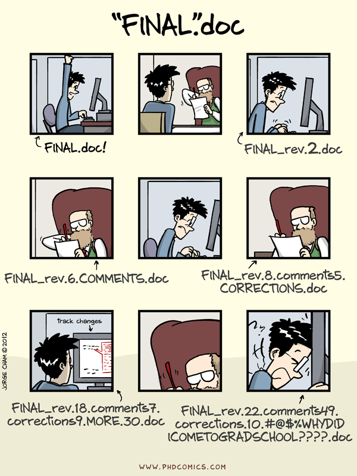
We’ve all been in this situation before - having
multiple nearly-identical versions of the same file
with no meaningful explanation of what the differences
are, just incremental changes in filename (thesis.doc,
thesis_final.doc, thesis_final2.doc…).
If we’re just dealing with text documents, some word processors let us deal with this a little better, like Microsoft Word’s “Track Changes” or Google Docs’ version history. However, research isn’t just Word docs, it’s code and data and diagrams too, and a single paper or project can involve a whole constellation of files, all of which need backing up!
Using version control means we don’t keep dozens of different versions of our files hanging about taking up space, and when we store a revision, we store an explanation of what changed.
2. Reproducibility
When you use version control, at any point in the future, you can retrieve the correct versions of your documents, scripts or code. So, for example, a year after publication, you can get hold of the precise combination of scripts and data that you used to assemble a paper.
Version control makes reproducibility simpler. Without using version control it’s very hard to say that your research is truly reproducible…
3. To Aid Collaboration
As well as maintaining a revison history, VC tools also help multiple authors collaborate on the same file or set of files.
Professional software developers use VC to work in large teams and to keep track of what they’ve done. If you know what changes have been made to each file, you can easily combine multiple people’s changes to a single file. You can also track down where and when (and by who!) bugs in the code were introduced.
Every large software development project relies on VC, and most programmers use it for their small jobs as well.
VC is not just for software: papers, small data sets - anything that changes over time, or needs to be shared can, and probably should be stored in a version control system.
We’ll look at both the backup and collaboration scenarios, but first it’s useful to understand what going on under the hood.
How do Version Control Tools Work?
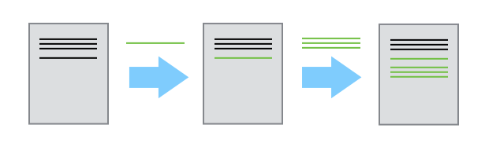
Version control systems start by storing the base version of the file that you save and then store just the changes you made at each step on the way. You can think of it like storing Lego bricks and the instructions for putting them together - if you start with the first piece, then add each other in turn, you end up with your final document.

Once you think of changes as separate from the document itself, you can then think about taking the same document and adding different changes to it, getting different versions of the document. For example, two users can make independent sets of changes based on the same document.

If there aren’t conflicts, you can even try to combine two different sets of changes together onto the same base document, a process called merging.
Version Control Alternatives
Git is overwhelmingly the most popular version control system in academia, and beyond. It’s a distributed version control system, where every developer in a team has their own full copy of a repository, and can synchronise between them.
It’s partly become such a success thanks to sites like GitHub and GitLab, which make it easy to collaborate on a Git repository, and provide all kinds of extra tools to manage software projects. Plus, GitHub offers free upgraded membership to academics, students and educators - you can apply for them here.
If you’re working on old projects, or ones with very specific needs, you might use Mercurial, another distributed system, or possibly Subversion, a centralised system where there’s a single copy of the repository that everyone connects to.
Because Git is so popular, and making a GitHub account is so easy, we’re going to teach you how to use them.
Graphical User Interfaces
We’re going to teach you how to use Git through GitHub Desktop, a graphical user interface (GUI) that makes it easy to manage your code visually, without needing to type commands. This isn’t the only way to use Git, however. Under the hood, GitHub Desktop is simply a ‘wrapper’ around the command-line version of Git — as are all Git GUIs. If you understand what GitHub Desktop is doing, you’ll find it straightforward to switch to other interfaces, such as the Git tools built into VS Code or JetBrains IDEs.
| SourceTree | Git Kraken | GitHub Desktop |
|---|---|---|
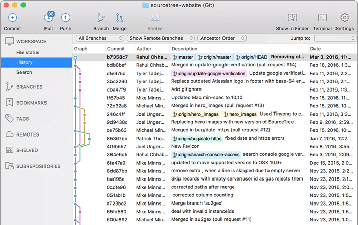 |
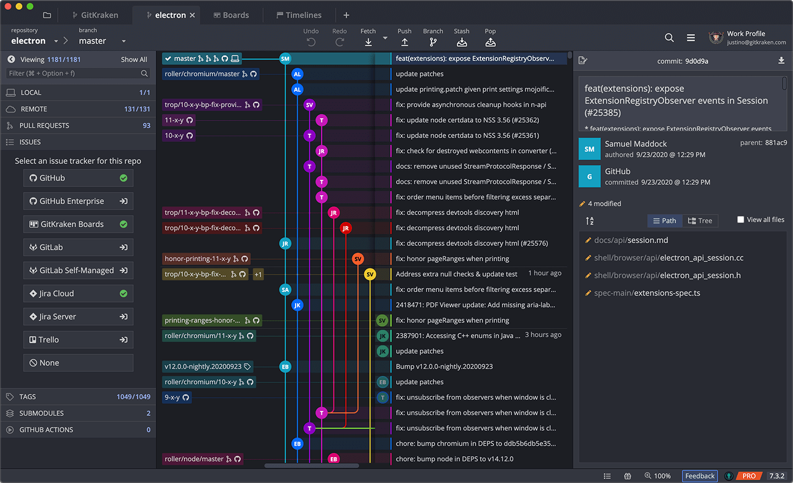 |
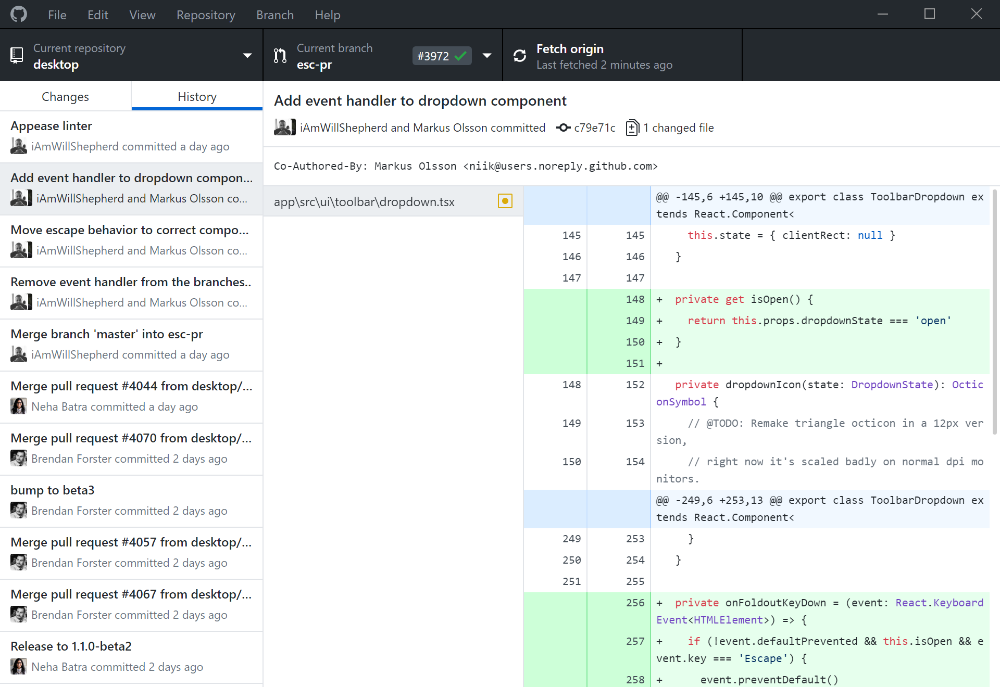 |
One important exception to be aware of is that, on high-performance computing clusters like Iridis, there’s no graphical environment, so you’ll need to use command-line Git there. The good news is that once you understand the core concepts through GitHub Desktop, the command-line equivalent is much easier to pick up, and you can mix and match, for example using GitHub Desktop on your desktop workstation while using command-line Git on Iridis.
Git GUI Integrations
Most code editors and Integrated Development Environments (or IDEs) integrate Git into their UI,so you can easily see the state of your files and work with your repository. Examples include:
| VS Code | PyCharm & CLion | RStudio/Posit |
|---|---|---|
 |
 |
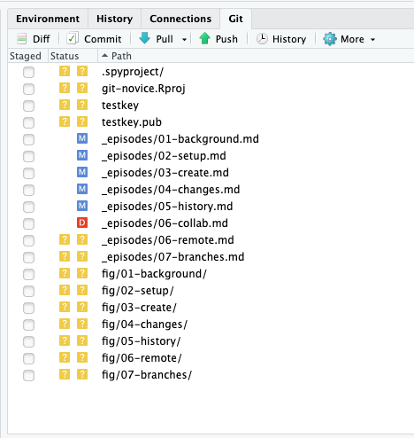 |
Others include MatLab, Atom, Sublime Text and Notepad++. The only common IDE with poor Git support is Spyder!
- Version control is like an unlimited ‘undo’.
- Version control also allows many people to work in parallel.
Content from Setting Up Git
Last updated on 2026-06-18 | Edit this page
Estimated time: 5 minutes
Overview
Questions
- How do I get set up to use Git?
- How do I set up my account on GitHub?
Objectives
- Install GitHub Desktop.
- Sign in to GitHub through GitHub Desktop.
- Understand how GitHub Desktop configures your Git identity.
Get Started
We’ll start by exploring how version control can be used to keep track of what one person did and when.
First, you’ll need to install GitHub Desktop. If you have not already, download it from desktop.github.com and run the installer.
Setting Up GitHub
In order to make sure all our work is backed up online, as well as making it easy to share with collaborators, we’re going to link our version control content to GitHub. You’ll need to create an account there. As your GitHub username will appear in the URLs of your projects there, it’s best to use a short, clear version of your name if you can.
Other Platforms
There are other repository hosting sites like GitHub - Southampton has its own instance of GitLab that’s only accessible to Southampton user accounts. We’ll use GitHub today, as it’s the easiest one to use if you want to share your code with collaborators from outside the University - getting them access to the Southampton GitLab can be difficult! Both GitHub and GitLab have the same features, though some menu names will be different.
Setting Up GitHub Desktop
When you open GitHub Desktop for the first time, it will walk you through signing in to GitHub. Click Sign in to GitHub.com and this will open a browser window where you can login to your account and authorise GitHub Desktop.
If you’re not prompted to login to your GitHub account, go to the File menu and click Options.
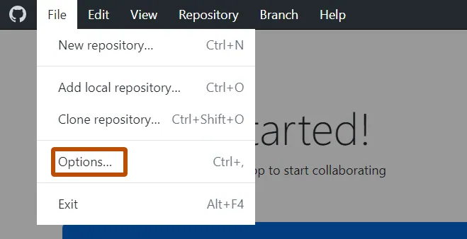
Then, in the Options window, on the Accounts pane, click “Sign into GitHub.com”
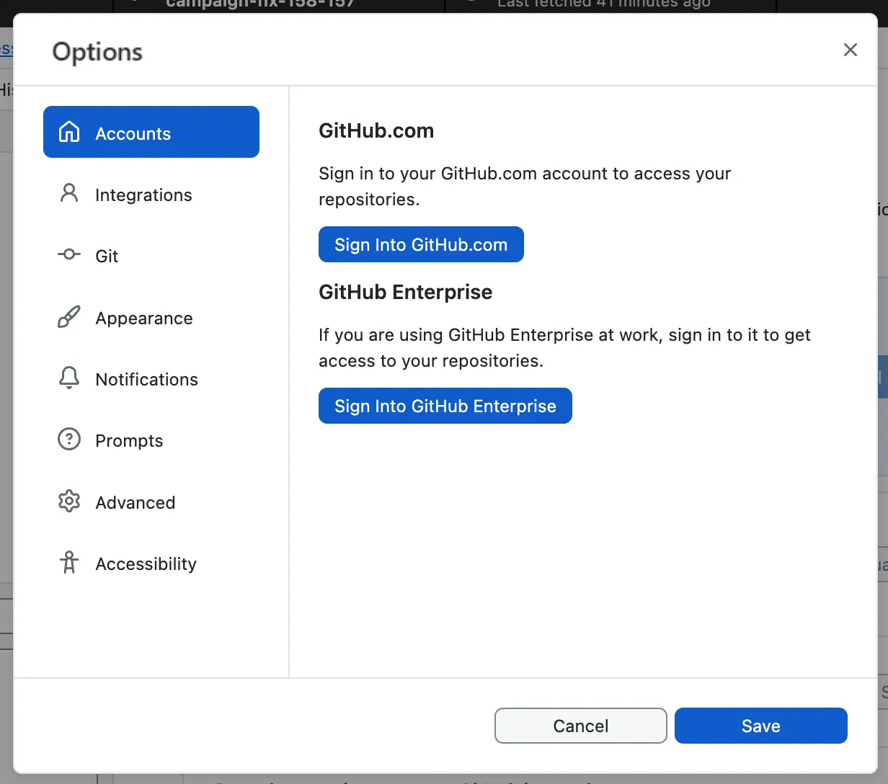
Once signed in, GitHub Desktop will ask you to configure Git. It pre-fills your name and email address from your GitHub account. These are what Git uses to record who made each change.
Check the details are correct, then click Finish.
What’s Happening Under the Hood
GitHub Desktop automatically handles two things that you’d otherwise have to do manually on the command line:
Your Git identity: GitHub Desktop sets your name and email for you. The command-line equivalent would be:
BASH
$ git config --global user.name "Firstname Surname"
$ git config --global user.email "fsurname@university.ac.uk"Authentication: GitHub Desktop manages its own secure credential storage, so you don’t need to set up SSH keys manually to work with GitHub. If you later want to use command-line Git (for example, on a high-performance computer like Iridis), you’ll need to set these up separately.
Before moving on, make sure you’ve:
- Created a GitHub account.
- Installed GitHub Desktop.
- Signed in and confirmed your Git identity is configured.
- GitHub Desktop handles Git configuration and authentication automatically when you sign in.
- The name and email GitHub Desktop configures are used by Git to record who made each change.
- You need a GitHub account to use GitHub Desktop.
Content from Creating a Repository
Last updated on 2026-06-18 | Edit this page
Estimated time: 10 minutes
Overview
Questions
- How do I create a version control repository?
- Where does Git store information?
Objectives
- Create a repository from a template.
- Clone and use a Git repository with GitHub Desktop.
- Describe the purpose of the
.gitdirectory.
Creating a Repository
Now let’s create a new repository for us to work on.
For convenience, we’re going to work with some pre-existing template code that’s already stored in a repository. The first thing we need to do is create our own copy of that template, which we can do on GitHub.
Go to our template repository and select Use this template:
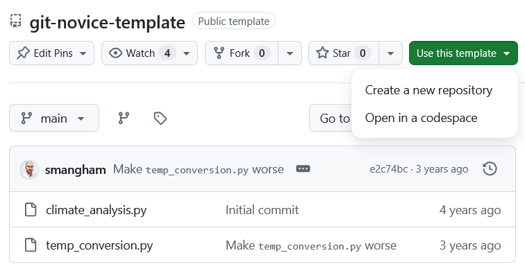
We should get prompted to give details for what we’d like our copy of
the template to be called. As this demo code is for analysing climate
data, we’ll name our copy of it climate-analysis. We also
want it to be public, so anyone can see and copy our code:
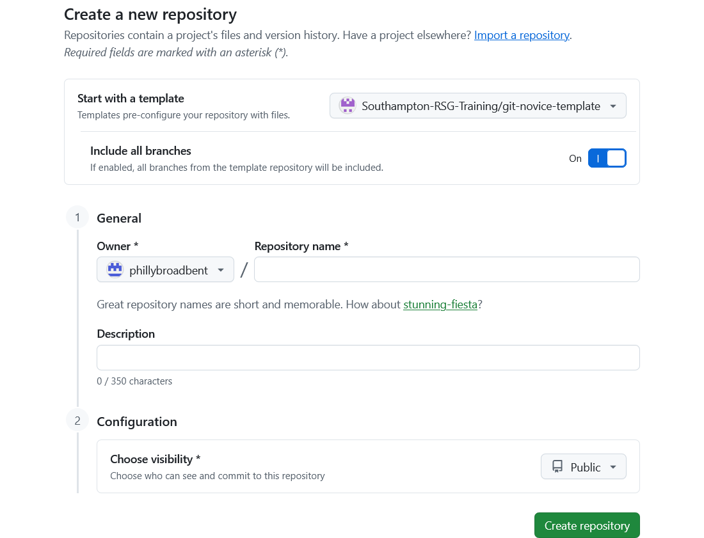
Public or Private?
GitHub will allow you to create private repositories, so only people you specify can access the code, but it’s always best to keep your code public - especially if you’re going to use it in a paper! Code that generates or analyses data is a fundamental part of your method, and if you don’t include your full method in papers your work can’t be reproduced, and reproducibility is key to the scientific process. It’s a good idea to keep your repositories public unless you’ve got a strong reason, like embargoes imposed by industrial partners.
A major advantage of this is if you leave academia, or you switch institution and forget to update the email on your GitHub account before you lose your old one, your work won’t be lost forever!
After a brief wait, GitHub will have created a remote repository - a copy of the files and their history stored on GitHub’s servers.
Cloning the Repository
In the File menu, click Clone Repository
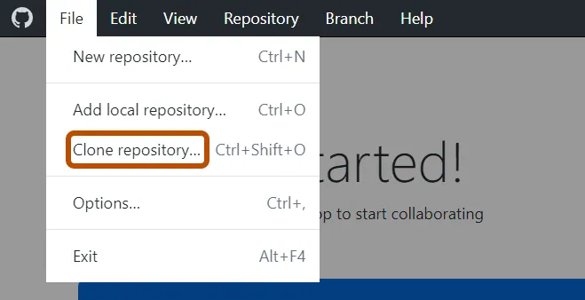
Click the GitHub.com because this is the location of the repository you want to clone.
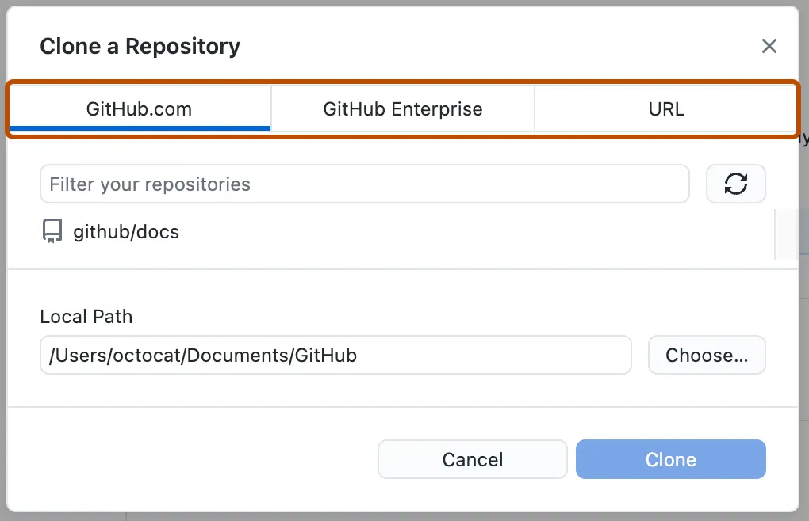
From the list of repositories, click the repository you want to clone. In this case climate-analysis.
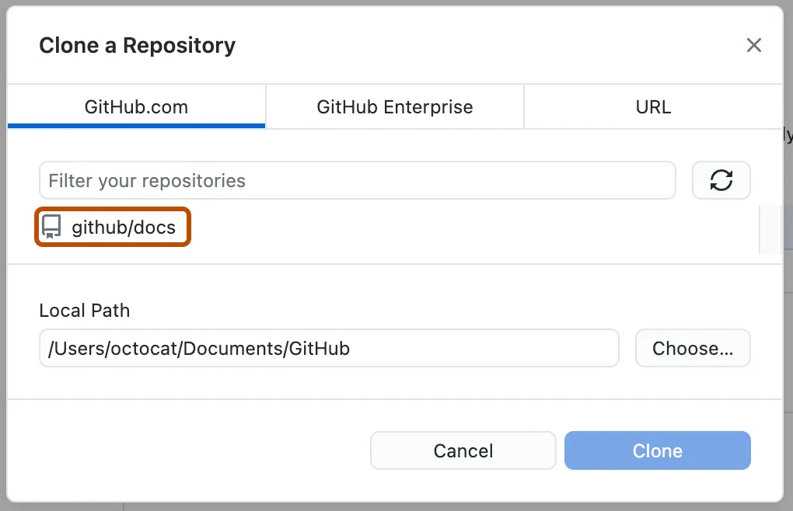
To select the local directory into which you want to clone the repository, next to the “Local Path” field, click Choose… and navigate to the directory.
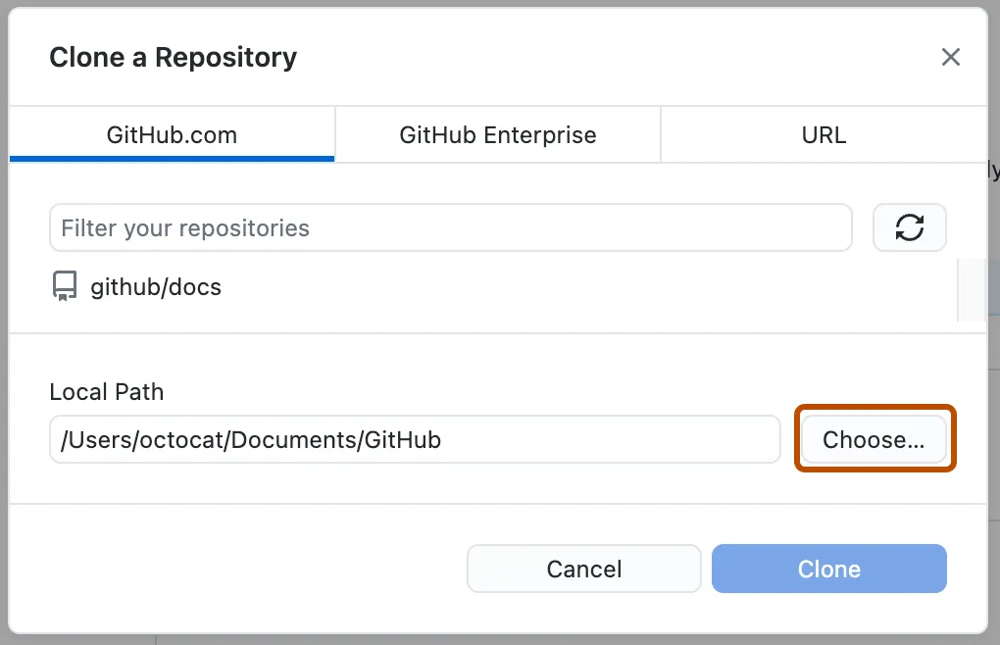
At the bottom of the window, click Clone
Creating Repositories Locally
We’ve shown you how to create a repository on GitHub and then clone it, but you don’t have to do it that way.
If you already have a folder of code on your computer that you want to put under version control, you can use File > Add Local Repository in GitHub Desktop. If the folder isn’t already a Git repository, GitHub Desktop will offer to initialise it as one for you.
You’ll then see a Publish repository button in GitHub Desktop, which will create the matching remote repository on GitHub and link everything up in one step.
Exploring a Repository
Once cloning is complete, GitHub Desktop will show you your new repository. To see the actual files, click Repository then Show in Explorer (Windows) or Show in Finder (Mac).
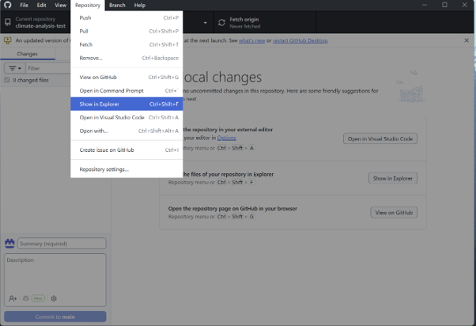
You should see the two Python files that make up our climate analysis code:
climate_analysis.py temp_conversion.pyDon’t worry, you don’t need to know Python to follow along.
The folder looks like any other on your computer, nothing obviously
special about it. However, if you turn on hidden files
in your file explorer, you’ll spot a hidden folder called
.git:
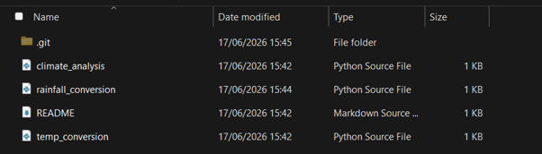
Git stores all its information about the project in this
.git directory. If we ever delete it, we will lose the
project’s history. GitHub Desktop manages this folder for you — you
should never need to touch it directly.
Check Status
Switching back to GitHub Desktop, you’ll notice the Changes tab on the left is empty, with a message like “No local changes”:
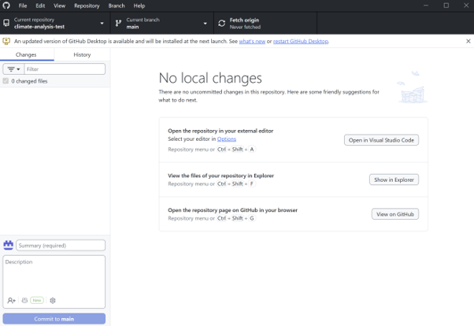
This means the files on your computer currently look exactly the same as the last snapshot stored in the repository. In other words, there’s nothing new to record yet.
You’ll also notice the current branch is shown at the top of the window as main. A branch is an independent line of development; we only have one at the moment.
Branch Names
In this workshop, we have a default branch called main. In older versions of Git, new repositories had a default branch called master, and you’ll still see master used in many examples online. Don’t worry, branches work the same regardless of what they’re called!
Before moving on, make sure you’ve:
- Created your copy of the template repository on GitHub.
- Cloned it to your local machine using GitHub Desktop.
- GitHub Desktop’s Clone feature downloads a remote repository and links it to your local copy automatically.
- Git stores all of its repository data in the hidden
.gitdirectory.
Content from Tracking Changes
Last updated on 2026-06-23 | Edit this page
Estimated time: 10 minutes
Overview
Questions
- How do I track the changes I make to files using Git?
Objectives
- Go through the modify-stage-commit cycle for one or more files.
- Describe where changes are stored at each stage in the modify-stage-commit cycle.
Tracking Changes
We’ve got a repository now containing a few pre-existing files - so
let’s add one more. You might remember GitHub suggesting we add a
README.md to let people know what our code is about, so
let’s do that now.
Creating a New File
Open your repository folder in your text editor.
The easiest way to do this is via GitHub Desktop: go to Repository > Open with….
Select your preferred text editor or Integrated Development Environment (IDE) from the dropdown list.
Create a new file called README.md and add the
following:
# Climate Analysis Toolkit
This is a set of python scripts designed to analyse climate datafiles.Save the file. Our description is a bit brief, but it’s enough for now!
TODO: For learners without an IDE installed, give the option to add a txt/md file using notepad.
Untracked Changes
Switch back to GitHub Desktop. The Changes tab on
the left now shows README.md with a small green plus sign
next to it, meaning Git has spotted a new file it hasn’t seen
before:
TODO:
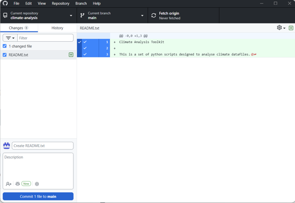
The panel on the right shows a preview of the file with new content highlighted in green.
You’ll also notice the file is already checked (the checkbox next to its name is ticked). Only checked files will be included in your next commit.
Initial Commit
Now we’re ready to commit the first snapshot of our repository to Git. At the bottom of the Changes panel, you’ll see a Summary field and an optional Description field:
TODO:
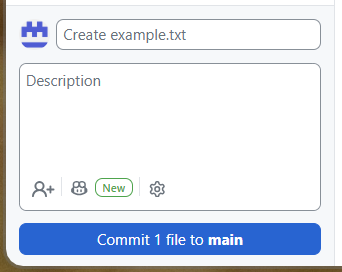
The Summary is your commit message, which should be short and descriptive:
Add a basic readme fileGood commit messages start with a brief (<50 characters) but descriptive summary of changes made.
If you want to go into more detail, use the Description field below.
Once you’ve entered a summary, click Commit to main:
TODO:
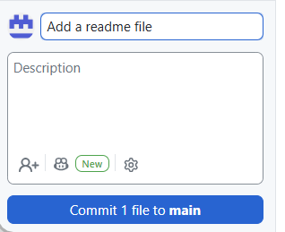
When we commit, GitHub Desktop takes everything we’ve
checked and stores a permanent snapshot inside the
.git directory. This snapshot is called a
revision, and is assigned a unique short identifier
(like fa90884).
After committing, the Changes tab will be empty again as there are no local changes.
The Staging Area
The checkboxes in GitHub Desktop represent Git’s staging area. This is a holding space where you assemble the changes you want to include in your next commit, before actually committing them.
-
Checking a file adds it to the staging area
(equivalent to
git addon the command line) -
Clicking Commit saves everything in the staging
area as a new revision (equivalent to
git commit)
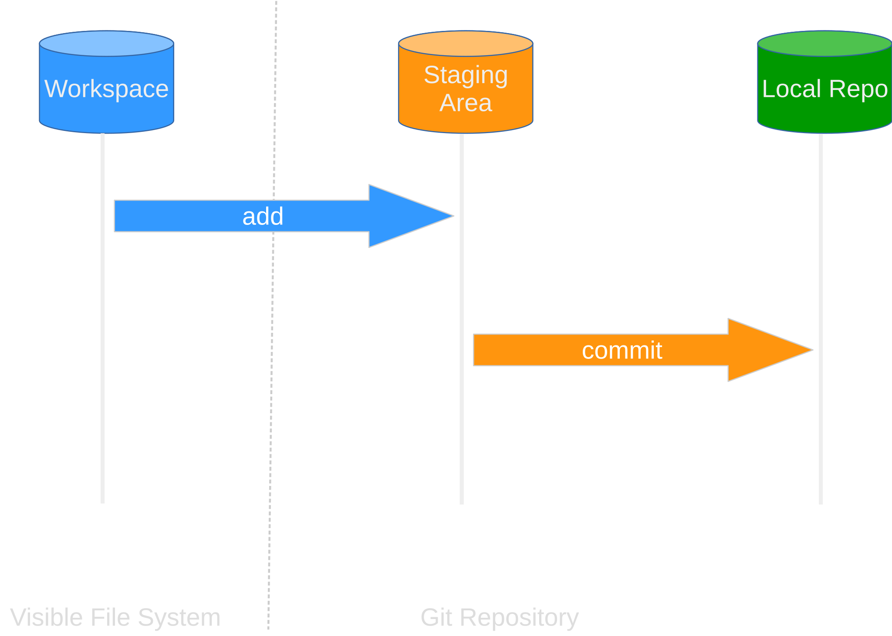
What’s the Point of the Staging Area?
Why do we have this two-stage process, where we stage changes, then commit them?
Among other reasons, it lets you bundle together a lot of related
changes in one go. If you renamed a variable used across multiple files
(e.g. from t to temperature), you’d need to
update all those files together for the change to make sense. Committing
file-by-file would leave you with a lot of broken intermediate versions.
The staging area lets you bundle all those small
changes into one coherent commit.
GitHub Desktop checks all changed files by default — but you can uncheck individual files (or even individual lines, using partial staging) to hold them back for a separate commit.
Review the Log
To see what we’ve done recently, switch to the History tab:
TODO:
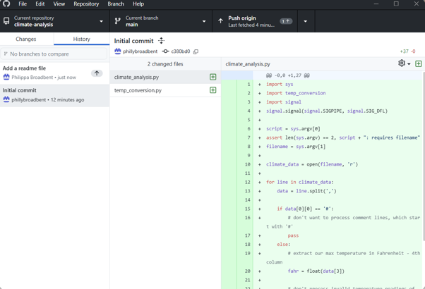
The History tab lists all commits to the repository, most recent at the top. For each commit, you can see:
- The commit message (summary)
- The author and timestamp
- The short commit identifier
(e.g.
fa90884) - Whether the commit has been pushed to GitHub.
Commits still only on your machine are shown as being ahead of
origin/main
Click any commit to see a diff of exactly what changed in that snapshot.
Modifying a File
Now suppose we modify an existing file. Open
climate_analysis.py in your text editor and add a
docstring at the very top of the file:
Save the file and switch back to GitHub Desktop. The Changes tab now
shows climate_analysis.py with a yellow M
badge, meaning it has been Modified:
TODO:
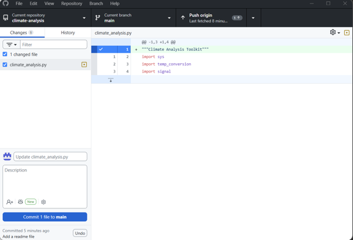
Review Changes and Commit
It is good practice to always review our changes
before committing them. Click on climate_analysis.py in the
Changes panel to see its diff — a view of exactly what
has changed. Additions are highlighted in green and
deletions in red:
TODO:
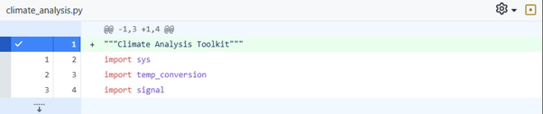
GitHub Desktop’s visual diff is much easier to read than the equivalent command-line output, making it easy to catch accidental changes before they’re committed.
What About Jupyter Notebooks?
Git works best with plain text files containing just code (or data). Jupyter Notebooks store code, outputs, and metadata together in a complex JSON format, which can make diffs hard to interpret, even in GitHub Desktop’s visual diff view.
Fortunately, the nbdime Python package provides much cleaner diff views for notebooks, and can integrate with GitHub Desktop.
If you have large chunks of code in your notebooks, once you’re
confident they’re correct it’s best to split them out into
.py files and import them back in. It makes them work
better with Git, and also makes them easy to reuse.
After reviewing the change, enter a commit message:
Add docstringand click Commit to main.
Selectively Staging Changes
GitHub Desktop checks all changed files by default. But what if you’ve changed several files and only want to commit some of them?
Simply uncheck the files you’d like to leave out, they’ll keep their changes and remain in the Changes panel, ready to be committed separately later.
You can even stage individual lines within a file: right-click any line in the diff view and select Stage Line. This is useful when you’ve made several unrelated tweaks to one file and want to commit them separately.
Git requires us to stage files (check them) before committing them, because we may not want to commit everything at once. For example, suppose we’ve fixed a bug in some existing code, but also written new code that’s not ready to share yet. We can stage and commit just the bug fix, leaving the work-in-progress for a later commit.
One More Change
We want to remind ourselves of some changes we need to make to a
file. Open climate_analysis.py in your text editor and add
a line at the end saying:
Then review your changes in GitHub Desktop’s diff view, and commit them with the message “Add rainfall processing placeholder”.
When you’re done, the Changes tab should show “No local changes”.
Open climate_analysis.py in your text editor, add the
TODO line at the end, and save.
Switch to GitHub Desktop — the Changes tab will show
climate_analysis.py as modified. Click on it to review the
diff; you should see the new comment line highlighted in green at the
bottom of the file.
Make sure the file is checked, then enter the summary:
Add rainfall processing placeholderClick Commit to main. The Changes tab should now be empty.
Now we’ve got the basic loop of using Git sorted. We make changes, review them in the diff view, stage what we want with the checkboxes, then create a new commit with a descriptive message.
But What Do We Add?
We’ve gone over how you add to a repository, but what do you add? Generally, you make one repository per project, paper or piece of software. Then, you add things like:
- Your code.
- Configuration files for other software.
- Documentation, diagrams, or LaTeX manuscripts.
- For software, commonly-used, small-ish (megabytes) data files - e.g. lookup tables of atomic weights.
- For projects or papers, possibly the output files from software you’ve run - e.g. the results of an analysis.
Repositories shouldn’t really be bigger than 1GB. If you store lots of different projects in one repository, it makes the history much less useful.
You don’t add things that are large, and where the different versions can’t really be meaningfully compared:
- Large data files - e.g. 10s of MB of sensor readings, survey
results, observations.
- These don’t usually change, and if they do, you can’t really compare the files themselves.
- Large output files - e.g. 10s of MB of simulation outputs, or
processed data.
- These don’t need to be stored, as you can recreate them at any time from the inputs.
- If they’re large, you can’t meaningfully compare them.
If you need to store and share data, rather than code & documentation, you can use Southampton’s ePrints repository - see the Library’s Research Data Management pages. Check your field’s standards first, though. Many fields have common, centralised places to store data to make it easier to find and use.
There’s also Git Large File Storage, but GitHub limits the size of files you can store using it. There’s a guide on large files and how to use Git Large File Storage on GitHub’s website. We’ll introduce how to ignore files later on.
- GitHub Desktop’s Changes tab shows new, modified, and deleted files in your repository.
- The checkbox next to each file controls whether it will be included in the next commit — this is the staging area.
- A commit permanently records all staged (checked) changes as a snapshot in the repository.
- GitHub Desktop’s diff view shows exactly what has changed in each file, with additions in green and deletions in red.
- Write commit messages that accurately describe your changes.
- The History tab lists all commits made to the repository, including which have been pushed to the remote.
Content from Exploring History
Last updated on 2026-06-23 | Edit this page
Estimated time: 10 minutes
Overview
Questions
- How can I review my changes?
- How can I recover old versions of files?
Objectives
- Navigate and understand Git revision history.
- Compare files with previous versions of themselves.
- Restore old versions of files.
Exploring History
We’ve seen that GitHub Desktop’s History tab shows us commits, but let’s look deeper at what we can do with that information.
Switch to the History tab. You should see a list of all commits to your repository, with the most recent at the top:
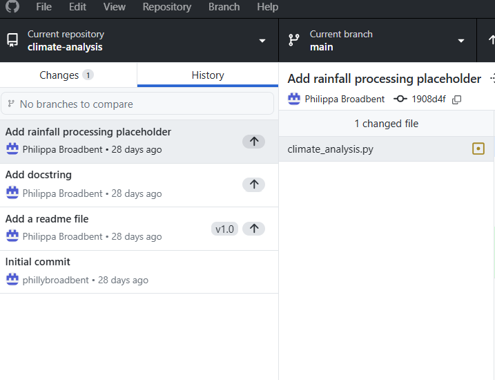
Each commit shows:
- The commit message (summary)
- The author and timestamp
- The short commit identifier
(e.g.
f15ad11)
The commit identifier is Git’s way of uniquely identifying a snapshot of your code. These are important because they let you refer to specific versions of your code, for example, the version you used to write a paper last year.
Comparing Versions
To see what changed in a specific commit, click on it in the History tab:
TODO: 
The right panel will show a diff of that commit. This shows all the changes made in that snapshot. Files are listed on the left, and clicking on a file shows the detailed diff on the right, with additions in green and deletions in red.
Comparing Specific Commits
What if we want to compare our current version of a file to how it looked several commits ago? We can do this by holding Ctrl (Windows) or Cmd (Mac) and selecting a range of commits in the History tab.
The right panel will then show a diff between the commits:
TODO:
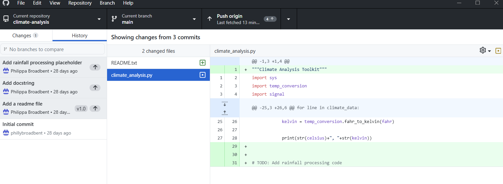
This lets us see exactly what changed between any two points in time, without needing to know commit IDs or count commits back from the present.
Reverting Changes
All right: we can save changes to files and see what we’ve changed, but what if we need to undo changes we’ve made?
Suppose we accidentally modify a file and commit it, and now we want to undo that commit. GitHub Desktop provides several ways to do this:
Option 1: Revert a Commit
If you want to undo the changes made in a specific commit, right-click on that commit in the History tab and select Revert changes in commit:
TODO:
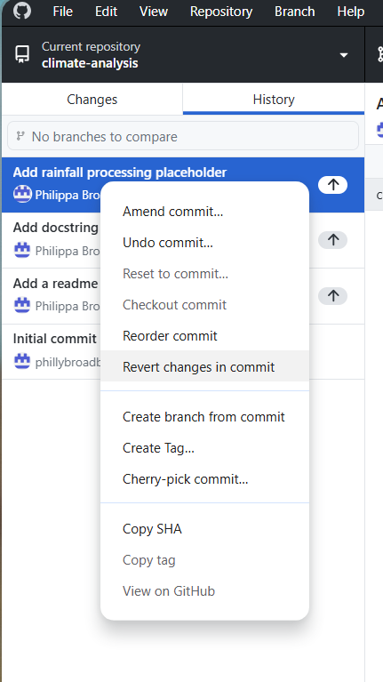
This creates a new commit that undoes the changes from the selected commit. The old commit stays in the history (you can always see what you did), but its changes are reversed.
Option 2: Discard Changes to a File
If you’ve made changes to files in your working directory but haven’t committed them yet, switch to the Changes tab. Right-click on a file you want to undo and select Discard Changes:
TODO:
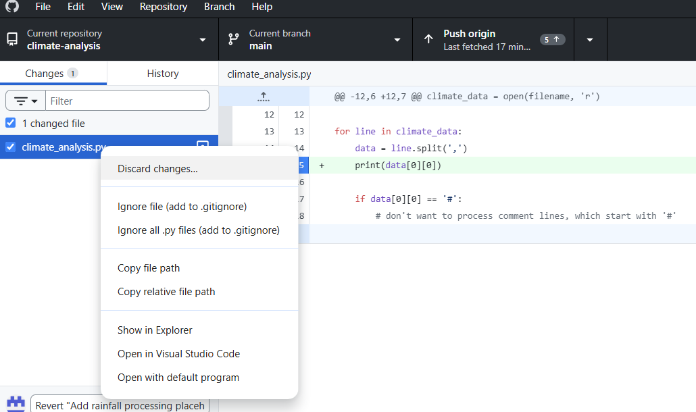
This will restore the file to its state in the last commit, throwing away any edits you’ve made.
Why Revert, Not Delete?
You might wonder: why does reverting a commit create a new commit, rather than just deleting the old one?
The answer is that your full history is important. You can always see what you did, when you did it, and who did it, even if you’ve since undone it. This makes it easy to find bugs (“When did this function break?”) and to understand how your code evolved.
If you deleted commits from history, you’d lose this record, making debugging and collaboration much harder. So Git creates a new “undo” commit instead, keeping the full history intact.
This also means you can safely experiment: if you make a commit and realize it was a bad idea, you can always undo it with a revert commit.
A Practical Example
Let’s say you accidentally delete climate_analysis.py.
Here’s how to recover it:
- Your file disappears from the folder, and the Changes tab shows it as deleted
- You realize this was a mistake
- In the Changes tab, right-click on the deleted file and select Discard Changes
- The file is restored to its last committed state
TODO: 
The fact that you can restore individual files tends to change the way people organize their work.
Consider a situation where all your code is in one file, and you fixed a bug in one section but accidentally introduced one elsewhere. You can’t just revert that commit without un-fixing the other bug.
However, if each section is in its own file, you can just revert the file you broke! This is one reason why splitting code into multiple files is good practice.
Tagging Important Versions
Sometimes you want to mark a specific commit as important, for example, the version of code you used to write a paper, or the first “released” version.
You can do this with tags. Right-click on a commit in the History tab and select Create a Tag:
TODO:
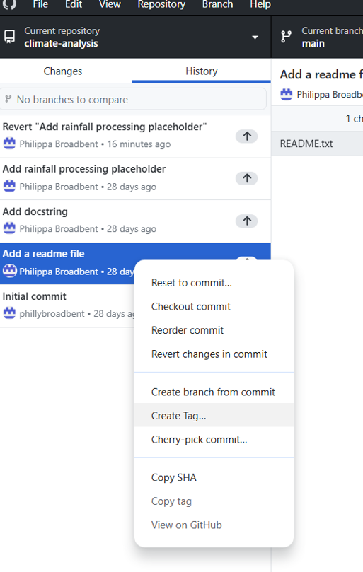
Give it a meaningful name like v1.0 or
paper-2024:
TODO: 
Tags appear in the History tab as labels on commits, making it easy to jump back to important versions. Unlike branch names, tags are permanent markers that never change, making them ideal for marking specific versions.
- GitHub Desktop’s History tab shows all commits to your repository.
- Click on a commit to see its diff which shows exactly what changed in that snapshot.
- Select multiple commits to compare the differences between them.
- Revert This Commit creates a new commit that undoes a previous one, keeping the full history.
- Discard Changes (for uncommitted changes) lets you recover old code.
Content from Remote Repositories
Last updated on 2026-06-23 | Edit this page
Estimated time: 25 minutes
Overview
Questions
- How do I work with a remote repository?
Objectives
- Understand how to push and pull changes to a remote repository.
- Encounter and resolve a conflict.
We’ve learned how to use a local repository on our computer to store our code and view changes:

Now, however, we’d like to share the changes we’ve made to our code with others, as well as making sure we have an off-site backup in case things go wrong. We need to upload our changes from our local repository to the remote repository on GitHub.
Why Have an Off-site Backup?
You might wonder why having an off-site backup (i.e. a copy not stored at your University) is so important. In 2005, a fire destroyed a building at the University of Southampton. Some people’s entire PhD projects were wiped out in the blaze. To ensure your PhD only involves a normal level of suffering, please make sure you have off-site backups of as much of your work as possible!
The remote repository on GitHub is another repository, just like the local repository on our computer, that Git makes it easy to send and receive data from. Multiple local repositories can connect to the same remote repository, allowing you to collaborate with colleagues easily.
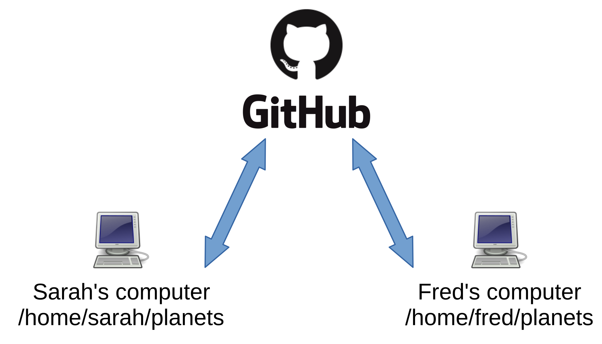
Pushing Your Work to GitHub
Notice that in GitHub Desktop, next to ‘Push Origin’ at the top of the screen, there’s an indication of how many commits we’ve made locally that haven’t yet been pushed to GitHub yet.
To synchronise our code to the remote repository, click the Push origin button:
TODO:
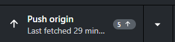
GitHub Desktop will upload your commits to GitHub. When it’s done, the tab will show ‘Fetch origin’ rather than ‘Push origin’.
TODO:
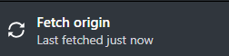
Now if you visit your repository on GitHub and refresh, you’ll see your updates:
TODO:
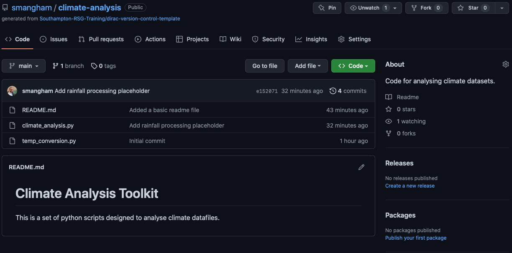
Conveniently, the contents of README.md are displayed on
the main page with formatting.
Your code should always have a descriptive README.md
file, so anyone visiting the repo can easily get started with it.
How often should I push?
Every day. You can never predict when your hard disk will fail or your building will be destroyed!
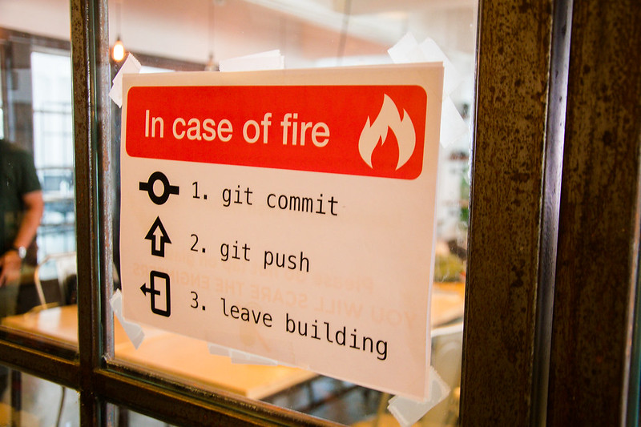
Credit: Mitch Altman, CC BY-SA 2.0Collaborating on a Remote Repository
Now we know how to push our work from our local repository to GitHub, we need to know the reverse - how to pull updates that someone else has made.
To demonstrate this, we’ll update our README.md to
welcome collaborators, then simulate a colleague making changes to the
same file.
First, open README.md in your text editor and add a line
about collaboration:
# Climate Analysis Toolkit
This is a set of python scripts designed to analyse climate datafiles.
If you're interested in collaborating, email me at your.email@soton.ac.uk.Save the file, switch to GitHub Desktop, and commit this change with the message:
Add collaboration infoBut don’t push to GitHub just yet! We’re going to set up a small conflict, of the kind you might see when working with a remote repository. What happens if you change a file at the same time as one of your collaborators does, and you both commit those changes? How does GitHub know which version of the file is ‘correct’?
Creating a Conflict
Pretending to be an existing collaborator, we’ll go and add those
installation instructions by editing our README.md file directly on
GitHub. To do this, visit your repository on GitHub and click the
pencil icon next to README.md to edit it
directly:
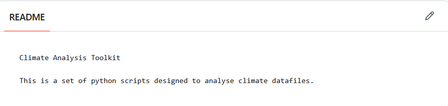
Add some installation instructions and a note about the project status:
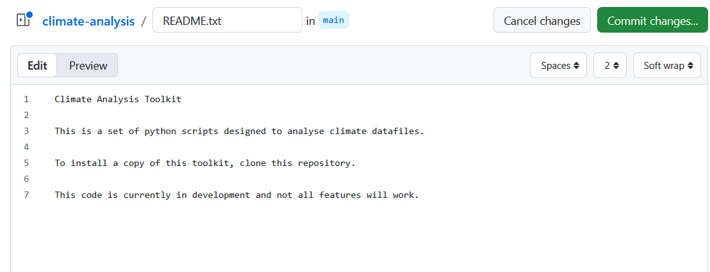
Commit the changes with a message like “Add installation instructions”:
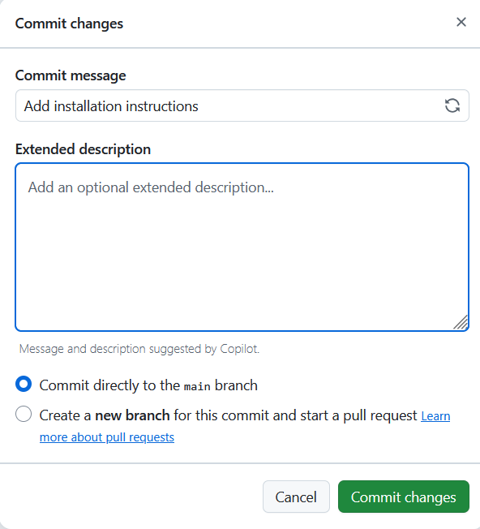
Now you have a situation where: - Your local
repository has a commit about collaboration info - Your
remote repository has a different commit about
installation instructions - Both edited the same file
(README.md)
This is a realistic scenario in collaborative work!
Push Conflicts
Great. Now let’s go back to GitHub Desktop and try pushing our local changes to the remote repository. This is going to cause problems, just as we expected:
Click the Push origin button:
TODO: 
GitHub Desktop will produce a warning message saying that you’re not able to push commits to this branch because there are commits on the remote that are not present on your local branch.
TODO:
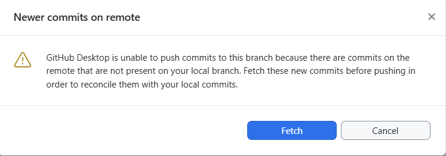
Click ‘Fetch’ and then click ‘Pull Origin’.
GitHub Desktop will try to automatically merge the changes, but in
this case it detects a conflict — both you and your
simulated colleague edited the same part of the README.md
file.
A notification will appear saying there are conflicts to resolve. Git has tried to auto-merge the files, but unfortunately failed. It can handle most conflicts by itself, but if two commits edit the exact same part of a file it will need you to help it.
TODO:
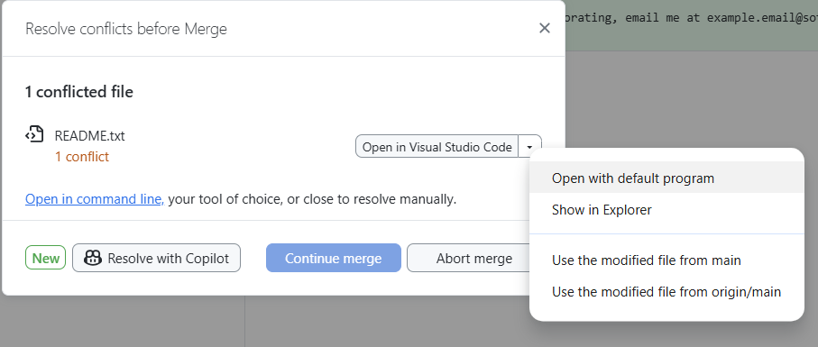
Click ‘Open with default program’ to open the file in your text editor.
# Climate Analysis Toolkit
This is a set of python scripts designed to analyse climate datafiles.
<<<<<<< HEAD
If you're interested in collaborating, email me at s.w.mangham@soton.ac.uk.
=======
To install a copy of the toolkit, open a terminal and run:
git clone git@github.com:smangham/climate-analysis.git
**This code is currently in development and not all features will work**
>>>>>>> 493dd81b5d5b34211ccff4b5d0daf8efb3147755We can see the two different edits we made to the end of the README.md file, in a block defined by <<<, === and >>>. The top block is labelled HEAD (the changes in our latest local commit), whilst the bottom block is labelled with the commit ID of the commit we made on GitHub.
We can fix this by deleting all the markers and keeping the text we want:
# Climate Analysis Toolkit
This is a set of python scripts designed to analyse climate datafiles.
If you're interested in collaborating, email me at s.w.mangham@soton.ac.uk.
To install a copy of the toolkit, open a terminal and run:
git clone git@github.com:smangham/climate-analysis.git
**This code is currently in development and not all features will work**Now we’ve got a fixed and finished README.md file, save the file. The conflict resolution window in GitHub Desktop should change to show all conflicts have been resolved. Click Continue merge.
GitHub Desktop will now automatically create a merge commit that combines both sets of changes. You’ll see it in the History tab with a special merge commit icon.
The Changes tab will now show the merged README.md file.
Review it to make sure it looks right, then the merge is complete!
Now you can push this merged version back to GitHub:
TODO:
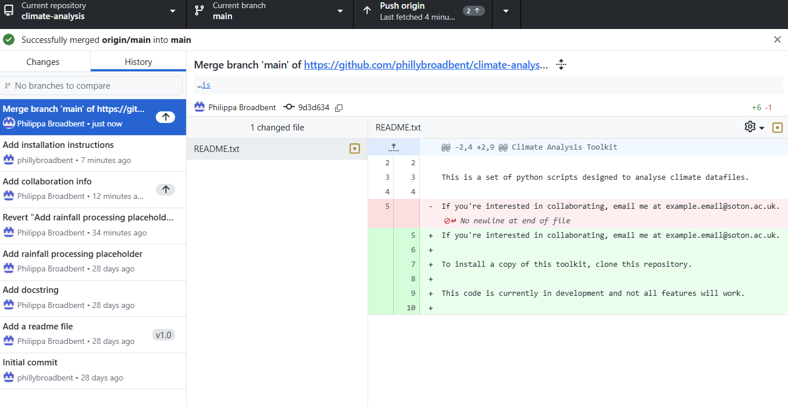
}Click Push origin and your merged changes will be uploaded to GitHub:
TODO:
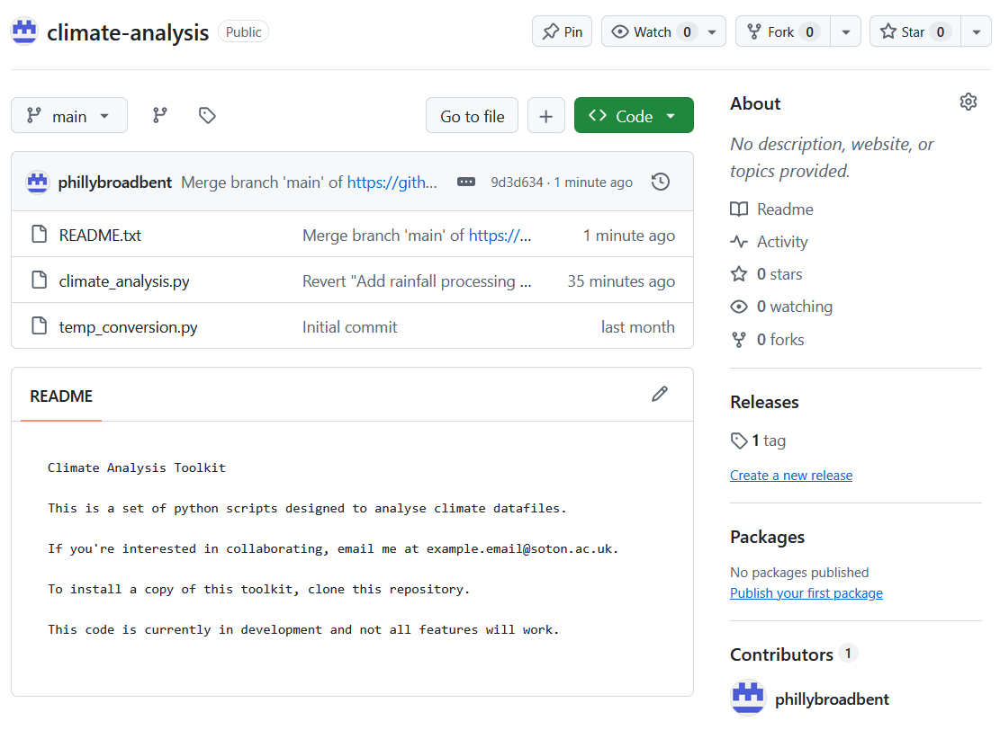
}Reducing Conflicts with Branches
If you’re working with multiple collaborators and conflicts become
frequent, Git branches are your solution. Each person
can work on their own branch, and only merge back to main
once their work is complete and tested. This dramatically reduces the
chance of conflicting edits to the same file.
We have a Stretch Episode that introduces branching in more detail!
Now you can successfully collaborate with others on your research code. The general workflow is:
- Pull at the start of your work session (get any changes your collaborators made)
- Make changes and commit them locally
- Push at the end of your session (share your changes)
- Resolve any conflicts.
- Push the resolved version to finalize the merge
- Click Push origin in GitHub Desktop to upload your local commits to GitHub.
- Click Pull origin to download commits from GitHub that others have made.
- If both you and a collaborator edit the same part of a file, GitHub Desktop detects a merge conflict.
- You can edit the file to combine the changes and resolve the conflict.
Content from Branching
Last updated on 2026-06-23 | Edit this page
Estimated time: 20 minutes
Overview
Questions
- What are branches?
Objectives
- Understand why you would use a branch.
- Create and switch between branches.
- Merge branches together.
We’ve seen branches mentioned a lot so far - mostly
main. So what are they?
A branch is a parallel version of a repository. It can branch off from a commit, contain its own set of extra commits and edits to files, then easily merge back into the branch it came off (or even another!). We can visualise this flow of splitting and merging branches like this:
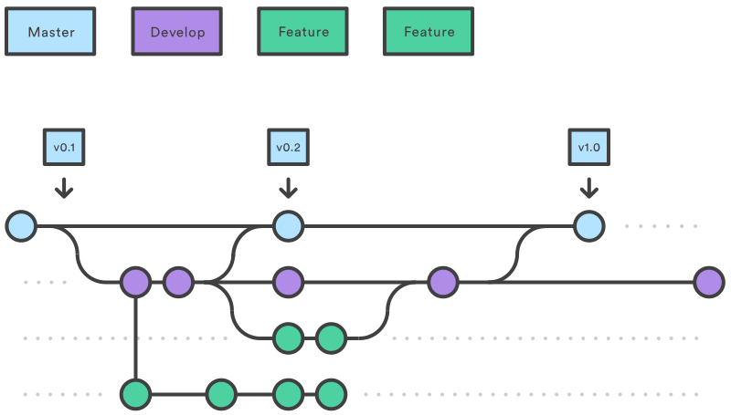
Why Use Branches?
If you’re a user of a code, and don’t plan to do any development, you
might never have to interact with branches. You’ll download the
main branch, containing the most recent, stable version of
the code, and just use that. Likewise, if you create a new repository
for a small code with only a single developer, then as long as you
aren’t sharing the code or its outputs you can just do all your work on
the main branch like we’ve been doing.
However, if you plan on making changes to an existing code, collaborating with others, or sharing your code or its outputs, then you’ll definitely want to use branches — as they make your life a lot easier.
Sharing Your Code: main and dev
branches
As mentioned, if you’re using an existing code written by somebody
else, you’ll typically just download the main branch and
use that. What if, though, the author(s) of the code want to continue
working on it without the potential users downloading half-finished or
untested code? They could keep all their changes local and only commit
and push once a new feature has been completed and rigorously tested,
but that’s not particularly sustainable for large features. It could
potentially take months to add a new feature (a long time to go without
a backup!), and you might want to share the work-in-progress version
with others to test.
The traditional way to do this is to create a development
branch (dev or develop) coming off the main
branch (main). The main branch
contains tested, finished code that can be shared with others, whilst
the development branch contains work-in-progress code.
Typically you merge your development branch into your
main branch when your work has been tested and is ready to share — for
example, when you release a paper using it. Then you can continue
working on your development branch and sharing development code with
other members of your group.
Making Changes to an Existing Code: Feature branches
Once you have a working code, particularly one that’s being shared, you’ll inevitably want to add new features. You could add them directly to your development branch — however, what happens if, mid-way through, you need to pause the feature and switch to something else as you wait for simulations to finish, new data to arrive, or similar? Instead of ending up with a mess of multiple half-finished modifications, you can instead create a new feature branch coming off of your development branch for each new feature. You work on each new feature or bugfix in their own feature branch, and merge them back into your development branch once they’re tested and complete. Then, as before, once you’re ready to publish a paper using your new functionality you merge it all back into the main branch.
Collaborating With Others: Feature branches
Feature branches also make collaborating with others far easier! Instead of stepping on each other’s toes by making conflicting edits to the same files, you can simply each work on your own branch. GitHub offers features to help manage collaborations too, by limiting who can merge their work into a branch without approval, allowing you to set up workflows where newer team members run their changes past those with experience.
Merging
We’ve mentioned merges repeatedly; as Git tracks the changes made to each file in each commit, it can easily determine whether or not the changes made in two branches conflict with each other. It can intelligently merge together two modified versions of a file where their changes don’t overlap, and highlight sections where they do for you to resolve, showing both versions of the code.
These use the same conflict resolution we saw earlier — new files are added seamlessly, whilst modified files use smart conflict resolution and might need your intervention if there’s a clash!
The Basics
In GitHub Desktop, look at the top of the window. You’ll see the current branch displayed:
TODO:
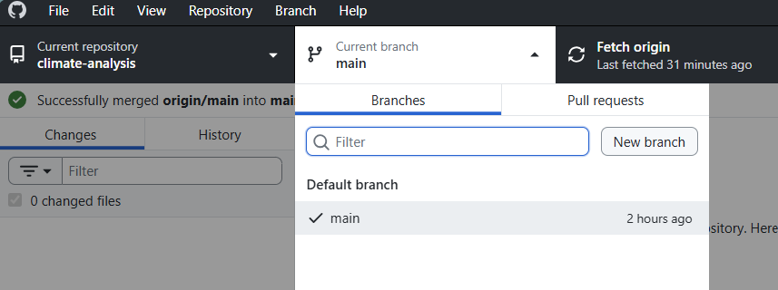
Click on it to see all available branches and create new ones:
TODO: 
TODO: Click New Branch to create a new branch:

A dialog will appear asking for the branch name and which branch it should come off:
TODO:
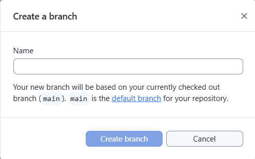
Let’s create a dev branch coming off main.
Enter dev as the branch name and make sure
main is selected as the “Create branch based on” option.
Click Create Branch.
Working with a dev branch
You’re now switched to the dev branch. You can see it
displayed in the branch dropdown at the top of the window.
Any commits we make on this branch will exist only on this
branch. When we switch back to main, they won’t show
up.
Let’s try it out. We’ll create a new text file for a rainfall
conversion information. Open your repository in your text editor and
create a new file called rainfall_conversion.txt:
Rainfall Conversion
Note: mm = inches x 25.4Save the file and switch back to GitHub Desktop. You should see
rainfall_conversion.txt in the Changes tab as a new file.
Commit it with the message:
Add rainfall moduleNow let’s see what happens when we switch back to main.
Click the branch dropdown and select main:
TODO:
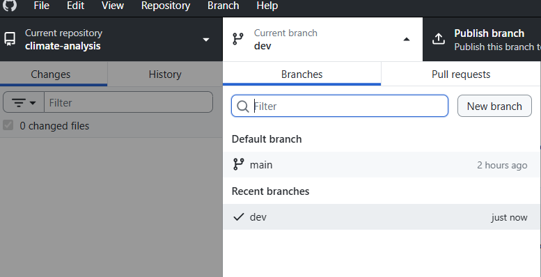
}Now go to your file explorer and look at your repository folder. The
rainfall_conversion.py file has disappeared!
It hasn’t been deleted — it still exists safely in the
.git directory, stored as part of your dev
branch. Switch back to dev (click the branch dropdown and
select dev), and it will reappear.
This is the power of branches: you can have completely different
versions of your code on different branches, and switch between them
instantly. If you edit an existing file on dev, then when
you switch back to main you’ll see the old version.
Publishing Your Branch
Now we’ve made changes to our dev branch, we want to
send them up to GitHub to make sure we don’t lose our development work.
Make sure you’re on the dev branch, then look at the top of
GitHub Desktop.
Since this is a new branch that doesn’t exist on GitHub yet, you’ll see a Publish branch button:
TODO:
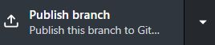
}Click Publish branch and GitHub Desktop will upload your new branch to GitHub.
If you visit your repository on GitHub and click the branch dropdown,
you’ll now see both main and dev listed:
TODO:
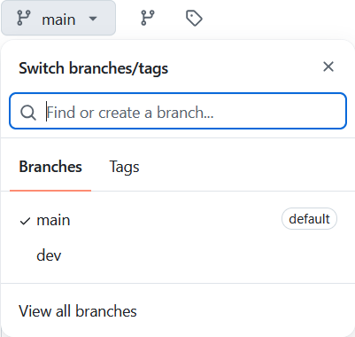
}You can switch between them on GitHub to see what each branch contains. GitHub will also suggest creating a Pull Request when it detects a recently-pushed branch:
TODO:
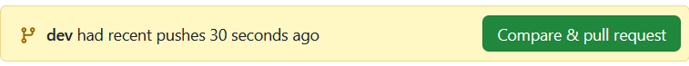
}Merging Branches
If we’re happy with the way our work on the dev branch
has gone, and we’ve tested it, we can merge the content back into
main!
First, let’s switch back to our main branch in GitHub Desktop.
Then, go to the Branch menu and select Choose a branch to merge into main. A dialog will appear asking which branch you want to merge into the current one. Select dev:
TODO:
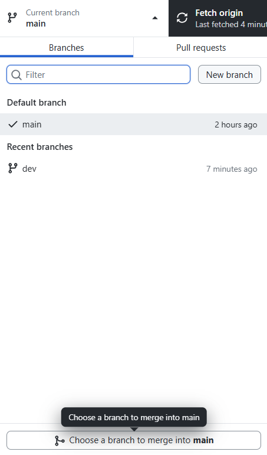
}Click Create a Merge Commit.
GitHub Desktop will merge the dev branch into
main:
TODO:  }
}
You’ll see the commit from your dev branch appear in the History tab
of your main branch. The rainfall_conversion.txt file will
now appear in your working directory on the main
branch.
Now push these changes to GitHub using the Push origin button:
TODO:  }
}
Both branches are now up-to-date on GitHub, and your new feature has been integrated into the main version of your code!
Pull Requests
When we push a new branch to GitHub, GitHub suggests creating a Pull Request — another way of merging branches that works better when you’re part of a team.
A Pull Request is a GitHub feature that lets your team: - Discuss the changes you’ve made - Request peer review of your code - See all your changes in detail before merging
Instead of merging directly, you create a Pull Request on GitHub, your team reviews it, and then someone approves and merges it.
If you’re working as part of a team, Pull Requests are better than using GitHub Desktop’s merge feature, as they provide a formal review process and create a record of discussions.
You can create a Pull Request by clicking the Pull Request button that appears when you push a new branch, or by going to your repository on GitHub and clicking New Pull Request.
Summary: The Branching Workflow
A typical workflow for developing new features looks like this:
-
Create a new branch (e.g.,
dev) - Switch to that branch in GitHub Desktop
- Make changes and commit them — they only affect your dev branch
- Publish the branch to GitHub to back it up
- Test thoroughly and make sure everything works
-
Merge back into
mainwhen ready - Push the merge to GitHub
This keeps your main branch stable and tested, whilst
allowing you to experiment on your dev branch.
- Branches are parallel versions of a repository that can be merged together.
- Click the branch dropdown at the top of GitHub Desktop to create, switch, and view branches.
- Publish branch sends a new branch to GitHub.
- Merge into Current Branch combines changes from one branch into another.
- Branches help with code sharing, collaboration, and keeping
mainstable whilst developing new features.
Content from Ignoring Things
Last updated on 2026-06-23 | Edit this page
Estimated time: 5 minutes
Overview
Questions
- How can I tell Git to ignore files I don’t want to track?
Objectives
- “Use a
.gitignorefile to ignore specific files and explain why this is useful.”
What if we have files that we do not want Git to track for us, like backup files or intermediate files created during data analysis?
Let’s switch to our dev branch and create a few dummy
files to demonstrate. Make sure you’re on the dev branch in
GitHub Desktop, then create:
- A new folder
results/in your repository folder: - A text file inside the
results/folder calledexample.txt
Switch to GitHub Desktop and look at the Changes tab. It will show
both the new example.txt file and the results/
folder as untracked files:
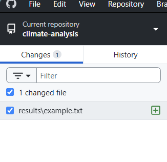
We may not want to share our results data on GitHub. Plus, having all
our results files listed could distract us from changes
that actually matter. Let’s tell Git to ignore them by
adding them to a .gitignore file.
Creating a .gitignore File
Click Repository then Repository settings.
Select Ignored files.
Add the following:
results/These patterns tell Git to ignore everything in the
results/ directory.
Save the file. Now switch back to GitHub Desktop and look at the Changes tab.
The results/ folder has disappeared from the list! They
still exist on your disk — Git just won’t track them.
The only thing GitHub Desktop now shows is the newly-created
.gitignore file:
}
Committing .gitignore
You might think we wouldn’t want to track .gitignore
itself, but everyone we’re sharing our repository with
will probably want to ignore the same things that we’re
ignoring.
So let’s add and commit it. Make sure .gitignore is
checked in the Changes tab, then enter a commit
message:
Add gitignore fileClick Commit to [branch]:
 }
}
The Changes tab will now be empty showing that there are no more untracked or modified files to commit.
The files are still there and you can view them in your file explorer, but they will now be ignored by Git.
Using .gitkeep Files
One interesting edge case: you can’t add empty directories to a repository — directories need to have files in them.
But what if your code expects a results/ directory to
exist for writing output to? Users would run your code and it would
error because the directory doesn’t exist.
You can solve this by creating an empty .gitkeep file
inside the directory. Although .gitkeep is a hidden file
(starts with a dot), it will ensure the directory structure is preserved
in your repository.
To do this:
- Create the
results/directory if it doesn’t exist - Create an empty file called
.gitkeepinside it - In GitHub Desktop, this file will appear — commit it with the message “Keep results directory”
Now when someone clones your repository, the results/
directory will exist, even though you’re ignoring the actual output
files.
Common .gitignore Patterns
Here are some common patterns you might want in a
.gitignore:
# Python
*.pyc
__pycache__/
.venv/
venv/
# Data files (keep code, not data)
*.csv
*.xlsx
data/
results/
# IDE and editor files
.vscode/
.idea/
*.swp
*~
# OS files
.DS_Store
Thumbs.dbMost platforms have pre-made .gitignore files for common
languages and tools. When you create a new repository on GitHub, it
offers to generate one for you!
.gitignore Templates
GitHub has a collection of .gitignore templates for
different programming languages and frameworks. You can find them at github.com/github/gitignore.
If you’re starting a Python project, for example, you might copy the Python.gitignore template and use it as your starting point.
- The
.gitignorefile tells Git which files and folders to ignore. - GitHub Desktop automatically respects
.gitignoreand won’t show ignored files in the Changes tab. - You should commit
.gitignoreto your repository so collaborators ignore the same files. - Use
.gitkeepfiles to preserve directory structure for empty folders that your code needs.
Content from Survey
Last updated on 2026-06-18 | Edit this page
Estimated time: 0 minutes